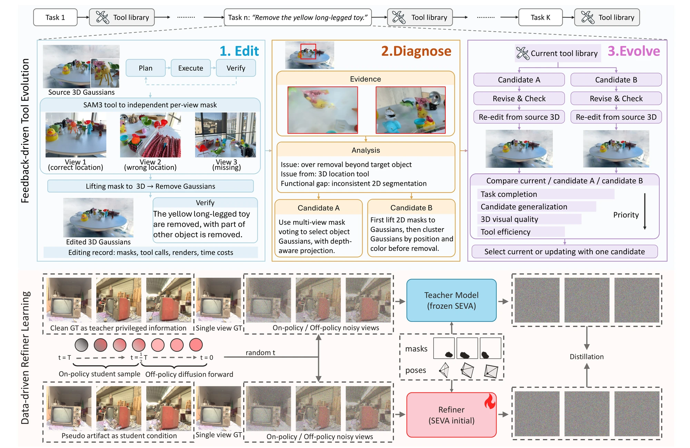
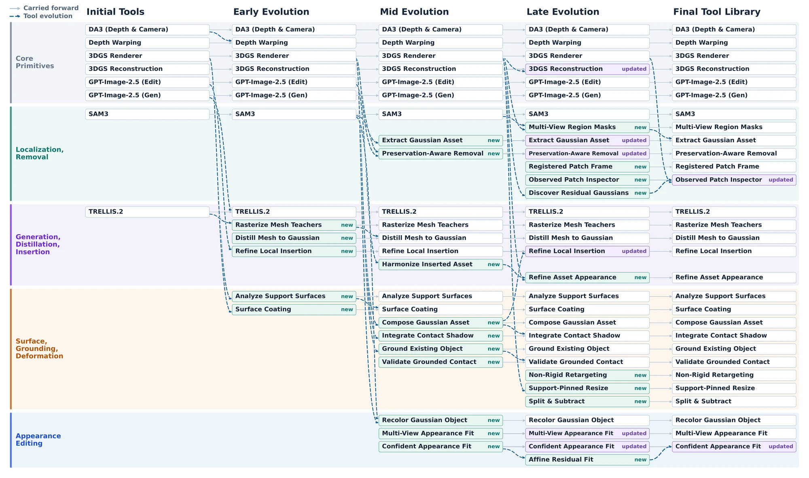
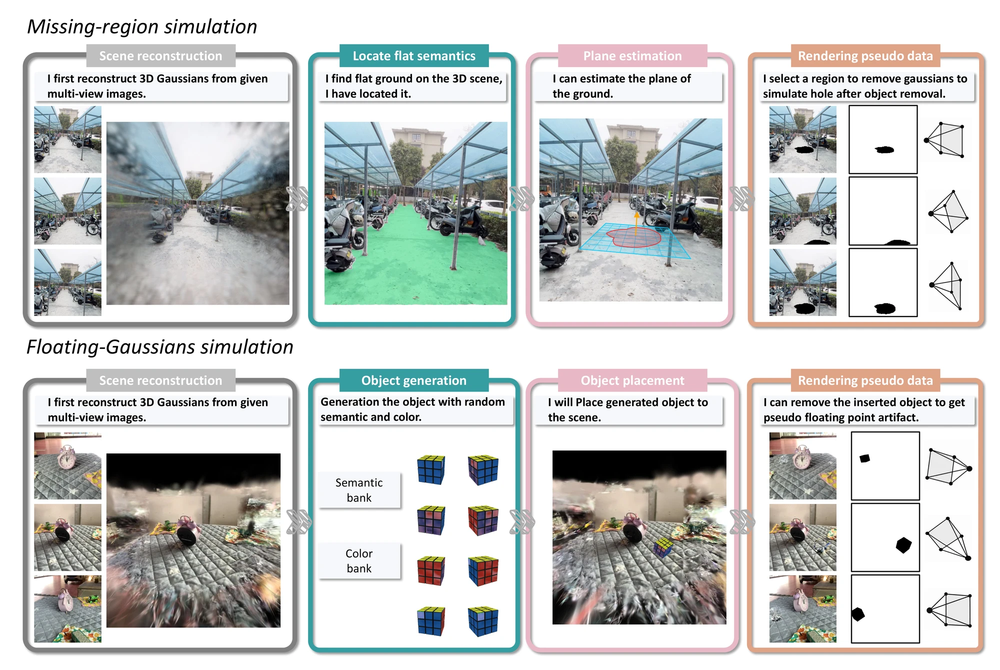
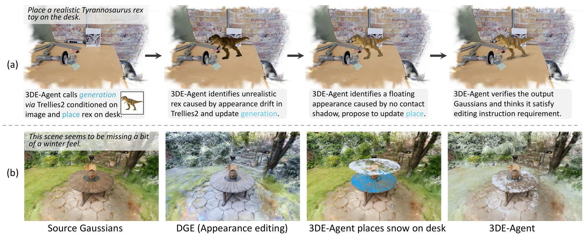

Project Page
3DE-Agent: Toward Universal Instruction-Driven Agentic 3D Editing
(R)SI Pushes 3D Editing into the Next Era.
3D Editing Gallery
1 / 24
Bear
Method Overview
Two complementary pillars: self-improving functional 3D tools and a data-driven multi-view Refiner.




BibTeX
@article{chen20263deagent,
title = {3DE-Agent: Toward Universal Instruction-Driven Agentic 3D Editing},
author = {Chen, Liyi and Zhang, Guowen and Wang, Pengfei and Ma, Zhiyuan and Wu, Yuhui and Zhang, Lei},
journal = {arXiv preprint},
year = {2026}
}